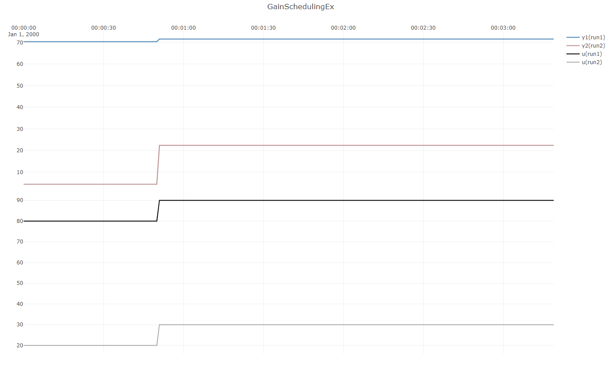
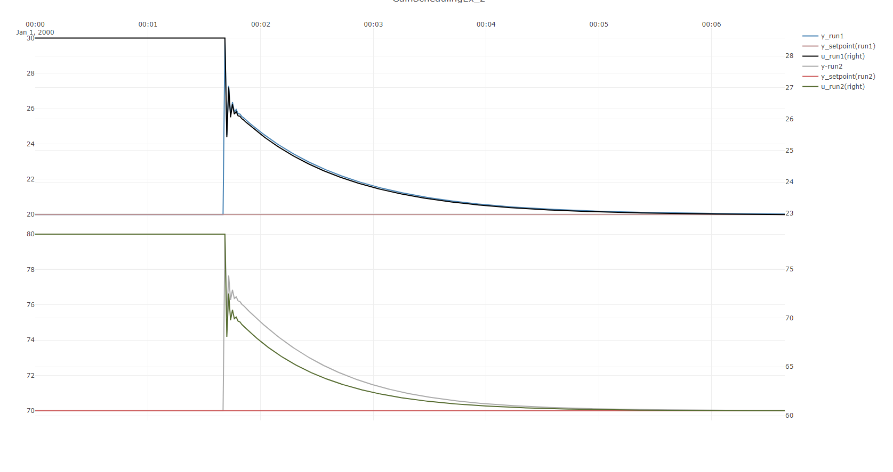
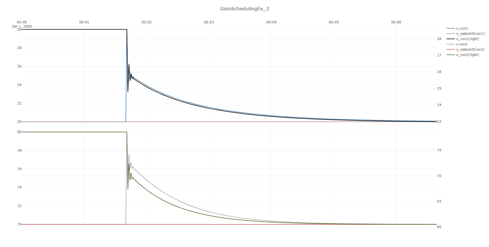

Gain-scheduling a nonlinear process
This example considers a system that is nonlinear, and illustrates how to apply and simulate gain-scheduling for such a system.
Note
This example considers gain-scheduling only in Kp, but PIDModel also supports gain scheduling
in Ti.
Simulating step responses of the open-loop system
The system considered is given a negative curvature, meaning that the gain will decrease with increasing values of
u.
Firstly, the system is defined and the two simulation runs are done, one run at a low value of input, where the gain is high, and a second at a high value of the input, where the gain is low.
var modelParameters = new DefaultProcessModelParameters
{
WasAbleToIdentify = true,
TimeConstant_s = 0,
ProcessGains = new double[] { 1.1 },
Curvatures = new double[] { -0.7 },
U0 = new double[] { 50 },
UNorm = new double[] { 50 },
TimeDelay_s = 0,
Bias = 50
};
var processModel
= new DefaultProcessModel(modelParameters, timeBase_s, "Process1");
var openLoopSim1 = new ProcessSimulator(timeBase_s,
new List<ISimulatableModel> { processModel });
openLoopSim1.AddSignal(processModel, SignalType.External_U,
TimeSeriesCreator.Step(50, 200, 80, 90));
openLoopSim1.Simulate(out var openLoopData1);
var openLoopSim2 = new ProcessSimulator(timeBase_s,
new List<ISimulatableModel> { processModel });
openLoopSim2.AddSignal(processModel, SignalType.External_U,
TimeSeriesCreator.Step(50, 200, 20, 30));
var isOk1 = openLoopSim2.Simulate(out var openLoopData2);
Plot.FromList(new List<double[]>
{openLoopData1.GetValues(processModel.GetID(),SignalType.Output_Y_sim),
openLoopData2.GetValues(processModel.GetID(),SignalType.Output_Y_sim),
openLoopData1.GetValues(processModel.GetID(),SignalType.External_U),
openLoopData2.GetValues(processModel.GetID(),SignalType.External_U)
},
new List<string> {"y1=y1(run1)","y1=y2(run2)","y3=u(run1)","y3=u(run2)"}
,timeBase_s,"GainSchedulingEx");
The resulting plot is shown below:

Simulating the use of two standard PID-controllers
// the system rejecting a disturbance at y=20 with pidModel1
var pidParameters1 = new PIDModelParameters()
{
Kp = 0.3,
Ti_s = 20
};
var pidModel1 = new PIDModel(pidParameters1, timeBase_s, "PID1");
var closedLoopSim1 = new ProcessSimulator(timeBase_s,
new List<ISimulatableModel> { pidModel1, processModel });
closedLoopSim1.ConnectModels(pidModel1,processModel);
closedLoopSim1.ConnectModels(processModel, pidModel1);
closedLoopSim1.AddSignal(pidModel1, SignalType.Setpoint_Yset,
TimeSeriesCreator.Constant(20,400));
closedLoopSim1.AddSignal(processModel,SignalType.Disturbance_D, TimeSeriesCreator.Step(100,400,0,10));
var isOk =closedLoopSim1.Simulate(out var closedLoopData1);
// the system rejecting a disturbance at y=70 with pidModel2
var pidParameters2 = new PIDModelParameters()
{
Kp = 1,//NB! higher Kp
Ti_s = 20
};
var pidModel2 = new PIDModel(pidParameters2, timeBase_s, "PID2");
var closedLoopSim2 = new ProcessSimulator(timeBase_s,
new List<ISimulatableModel> { pidModel2, processModel });
closedLoopSim2.ConnectModels(pidModel2, processModel);
closedLoopSim2.ConnectModels(processModel, pidModel2);
closedLoopSim2.AddSignal(pidModel2, SignalType.Setpoint_Yset,
TimeSeriesCreator.Constant(70, 400));
closedLoopSim2.AddSignal(processModel, SignalType.Disturbance_D, TimeSeriesCreator.Step(100, 400, 0, 10));
var isOk2 = closedLoopSim2.Simulate(out var closedLoopData2);
Plot.FromList(new List<double[]>
{closedLoopData1.GetValues(processModel.GetID(),SignalType.Output_Y_sim),
closedLoopData1.GetValues(pidModel1.GetID(),SignalType.Setpoint_Yset),
closedLoopData1.GetValues(pidModel1.GetID(),SignalType.PID_U),
closedLoopData2.GetValues(processModel.GetID(),SignalType.Output_Y_sim),
closedLoopData2.GetValues(pidModel2.GetID(),SignalType.Setpoint_Yset),
closedLoopData2.GetValues(pidModel2.GetID(),SignalType.PID_U),
},
new List<string> { "y1=y_run1","y1=y_setpoint(run1)", "y2=u_run1(right)","y3=y-run2",
"y3=y_setpoint(run2)", "y4=u_run2(right)" }, timeBase_s, "GainSchedulingEx_2");
The resulting plot is shown below: 
Note
In order to get an approximately equally rapid disturbacne rejection at setpoint y=70
as for y=20, Kp had to be increased from 0.3 to 1 , so by about a factor of three.
It would be quite hard to find a single PID-controller tuning that would work equally well across
the entire span of possible outputs y. Thus a gain-scheduled controller could be useful here.
Combining the two controllers into a single gain-scheduled controller
In the final part of this example, a gain-scheduling controller that performs equally well for both cases is created.
The code to create the gain-scheduling controller and simulate both runs:
// building a gain-scheduling controller that is able to handle both regimes
var pidParametersGS = new PIDModelParameters()
{
Ti_s = 20,
GainScheduling = new PIDgainScheduling()
{
GSActive_b =true,// turn on gain-scheduling
GS_x_Min =0, //Gain-scheduling: x minimum x=GsVariable
GS_x_1= 20, //Gain-scheduling: x1,x=GsVariable
GS_x_2=70, //Gain-scheduling: x2,x=GsVariable
GS_x_Max=100, //Gain-scheduling: x maxiumum, x = GsVariable
GS_Kp_Min=0.1, //Gain-scheduling: KP @ GsVariable=GS_x_Min
GS_Kp_1=0.2, //Gain-scheduling: KP @ GsVariable=GS_x_1
GS_Kp_2=1, //Gain-scheduling: KP @ GsVariable=GS_x_2
GS_Kp_Max=1.2 //Gain-scheduling: KP @ GsVariable=GS_x_Max
}
};
var pidModelGS = new PIDModel(pidParametersGS, timeBase_s, "PID_GS");
var closedLoopSimGS_1 = new ProcessSimulator(timeBase_s,
new List<ISimulatableModel> { pidModelGS, processModel });
closedLoopSimGS_1.ConnectModels(pidModelGS, processModel);
closedLoopSimGS_1.ConnectModels(processModel, pidModelGS);
closedLoopSimGS_1.AddSignal(pidModelGS, SignalType.Setpoint_Yset,
TimeSeriesCreator.Constant(20, 400));
closedLoopSimGS_1.AddSignal(processModel, SignalType.Disturbance_D,
TimeSeriesCreator.Step(100, 400, 0, 10));
// Gain-scheduling variable:
closedLoopSimGS_1.ConnectModels(processModel,pidModelGS,(int)PIDModelInputsIdx.GainScheduling);
var isOk3 = closedLoopSimGS_1.Simulate(out var closedLoopDataGS_1);
var closedLoopSimGS_2 = new ProcessSimulator(timeBase_s,
new List<ISimulatableModel> { pidModelGS, processModel });
closedLoopSimGS_2.ConnectModels(pidModelGS, processModel);
closedLoopSimGS_2.ConnectModels(processModel, pidModelGS);
closedLoopSimGS_2.AddSignal(pidModelGS, SignalType.Setpoint_Yset,
TimeSeriesCreator.Constant(70, 400));
closedLoopSimGS_2.AddSignal(processModel, SignalType.Disturbance_D,
TimeSeriesCreator.Step(100, 400, 0, 10));
// Gain-scheduling variable:
closedLoopSimGS_2.ConnectModels(processModel, pidModelGS, (int)PIDModelInputsIdx.GainScheduling);
var isOk4 = closedLoopSimGS_2.Simulate(out var closedLoopDataGS_2);
Plot.FromList(new List<double[]>
{closedLoopDataGS_1.GetValues(processModel.GetID(),SignalType.Output_Y_sim),
closedLoopDataGS_1.GetValues(pidModelGS.GetID(),SignalType.Setpoint_Yset),
closedLoopDataGS_1.GetValues(pidModelGS.GetID(),SignalType.PID_U),
closedLoopDataGS_2.GetValues(processModel.GetID(),SignalType.Output_Y_sim),
closedLoopDataGS_2.GetValues(pidModelGS.GetID(),SignalType.Setpoint_Yset),
closedLoopDataGS_2.GetValues(pidModelGS.GetID(),SignalType.PID_U)
},
new List<string> { "y1=y_run1","y1=y_setpoint(run1)", "y2=u_run1(right)","y3=y-run2",
"y3=y_setpoint(run2)", "y4=u_run2(right)" }, timeBase_s, "GainSchedulingEx_3");
The resulting plot is shown below: 
Note
Notice how in the final plot, the gain-scheduling controller combines the control performance of both controllers in the above parts of the example in a single controller.